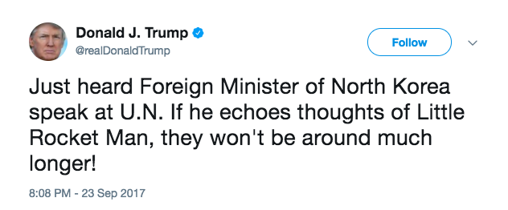

Context of Tweet
The State of The Union on September 23, 2017
Fox News summary and timeline of POTUS tweets on North KoreaPOTUS intended "Little Rocket Man" as a compliment
How POTUS tweets on North Korea may undermine Rex Tillerson